Para regular y controlar el caudal y la presión con la que el aire llega a los diferentes puntos de consumo, se utilizan unos dispositivos denominados válvulas.
Las válvulas pueden ser de varios tipos según su finalidad:
- Válvulas de vías o distribuidoras: determinan el camino que ha de tomar la corriente de aire.
- Válvulas de bloqueo: bloquean el paso del caudal de aire o lo dejan pasar, según queramos.
- Válvulas de caudal: regulan la cantidad de caudal de aire por una zona de la instalación.
Válvulas distribuidoras
Son los componentes que determinan el camino que ha de tomar la corriente de aire. Todas estas válvulas se definen por tres características funcionales:
- Número de vías u orificios que tienen.
- Número de posiciones que pueden tomar.
- Tipo de accionamiento y de retorno que necesitan para pasar de una posición a otra.
Todas estas características se reflejan en el símbolo de la válvula como veremos a continuación:
Vías
Las vías (o agujeros) tienen una serie de líneas internas y externas al símbolo de la válvula que indican lo siguiente:
| Símbolo | Significado |
|---|---|
| Línea interna: tubería. La flecha indica el sentido de paso del aire comprimido. | |
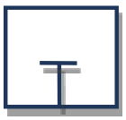 | Línea interna: bloqueo. El aire no puede pasar por ese orificio de la válvula. |
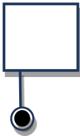 | Línea externa: toma de presión. |
 | Línea externa: aire evacuado a la atmósfera (escape directo). |
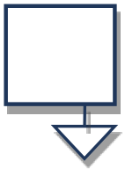 | Línea externa: aire evacuado a la atmósfera (escape indirecto). |
Posiciones
Cada posición se representa mediante un cuadrado:
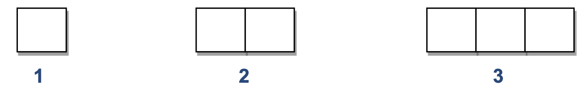
Lo normal son 2 posiciones (reposo y trabajo). Pero hay válvulas con otra posición neutra central.La posición inicial es la que se obtiene al dar presión y es en la que se dibujan conectadas las vías exteriores de la válvula. Es la posición a partir de la cual empieza el programa establecido. La segunda posición se obtendría desplazando lateralmente los cuadrados.
Aquí tienes algunos ejemplos de válvulas distribuidoras muy usadas:

Tipo de accionamiento-retorno
En general, las válvulas pueden tener cuatro tipos distintos de accionamiento: manual, mecánico, neumático o eléctrico. Aquí tienes los tipos de accionamientos o retornos de válvulas más comunes y sus símbolos correspondientes:
Accionamientos manuales
Están pensados para ser accionados directamente por un operario. Los más básicos son estos:
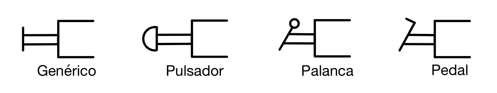
Accionamientos mecánicos
Están pensados para accionarse automáticamente cuando ocurra algo (normalmente, cuando se detecte una pieza en algún punto del sistema). También se incluye aquí el retorno mediante un muelle o resorte de la válvula a una posición inicial cuando cese la fuerza que la ha accionado.

Accionamientos neumáticos
La válvula se mueve mediante la acción de la misma presión de aire comprimido del sistema. Si la válvula no es muy grande puede moverse directamente utilizando un flujo de aire de control de menor presión, pero si es pesada necesita aire a alta presión, que le será proporcionado en el momento oportuno por una pequeña válvula auxiliar. Es el llamado servopilotaje.
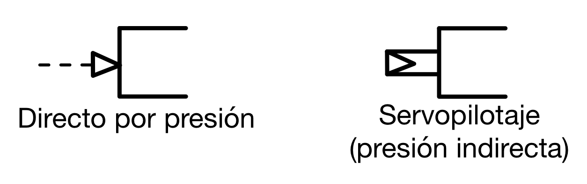
El servopilotaje se utiliza en válvulas distribuidoras de gran tamaño, para evitar un esfuerzo grande en el
accionamiento. Es un pilotaje neumático indirecto. Consiste en actuar en realidad sobre una pequeña válvula, que se comunica y deja pasar el aire comprimido para accionar la válvula principal. Todo el conjunto va montado sobre la misma válvula.
Accionamientos eléctricos
Funcionan mediante una bobina solenoide que, al recibir una corriente eléctrica, genera un campo magnético que atrae un componente metálico, accionando la válvula.
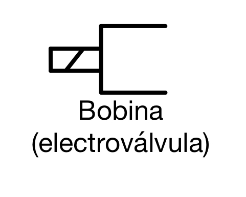
Las electroválvulas son las más utilizadas en la actualidad en los sistemas neumáticos porque se pueden controlar directamente desde un PLC (Programmable Logic Controller) que emite las señales eléctricas que accionan las válvulas automáticamente.
Accionamientos combinados
Es posible combinar varios accionamientos en una misma válvula, como puedes ver en este ejemplo:

Válvulas biestables y monoestables
Las válvulas pueden ser de dos tipos según permanezcan o no en la posición en que se han colocado:
- Biestables: la válvula se mantiene en cualquier posición en que la coloquemos y no cambiará hasta que volvamos a accionarla.
- Monoestables: la válvula sólo tiene una posición estable (la inicial). Si la accionamos y cambia de posición, volverá automáticamente a la posición inicial en cuanto cese el accionamiento. Normalmente será un resorte o muelle el encargado de retornar la válvula a su estado estable.
En general, en las válvulas biestables hay que tener un sistema de accionamiento para cada posición a la que queramos mover la válvula, pero es posible tener una válvula biestable con un solo accionamiento, utilizando un retorno por muelle y lo que se conoce como un enclavamiento.
Al accionar una vez la válvula, esta cambiará de posición y se quedará sujeta por el enclavamiento. Al volver a accionar la válvula, el enclavamiento se soltará y el muelle hará retornar a la válvula al estado inicial.
El símbolo del enclavamiento son unas hendiduras en forma de "V" que pueden combinarse con diferentes accionamientos. Por ejemplo, todas estas válvulas tendrían enclavamiento, independientemente de su accionamiento:
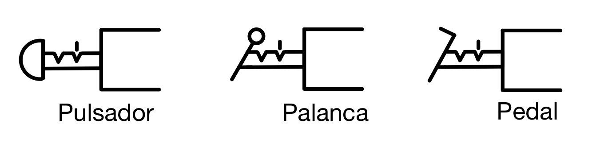
Identificación de una válvula distribuidora
La identificación de la válvula se define indicando los siguientes elementos:
- Dos cifras separadas por una barra (/), la primera indicando el número de vías y la segunda el número de posiciones.
- Tipo de accionamiento
- Tipo de retorno
Por ejemplo:
| SÍMBOLO | IDENTIFICACIÓN |
 |
Válvula 3/2 monoestable con accionamiento manual y retorno automático por resorte |
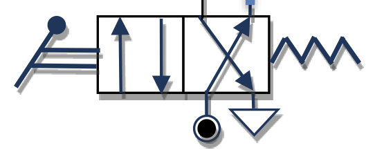 |
Válvula 4/2 monoestable con accionamiento por palanca y retorno automático por resorte |
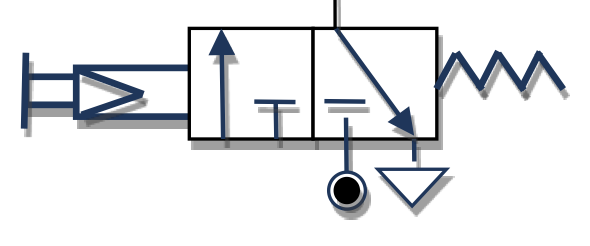 |
Válvula 3/2 monoestable con accionamiento manual servopilotado y retorno automático por resorte |
 |
Válvula 3/2 biestable con accionamiento neumático mediante presión directa |
 |
Válvula 5/3 monoestable con accionamiento neumático mediante presión directa y centrado automático mediante resorte (posición central de bloqueo) |
El “PLC” (Programmable Logic Controller, por sus siglas en inglés) es un dispositivo electrónico que se programa para realizar acciones de control automáticamente. Un PLC es un cerebro que activa componentes de maquinarias para ejecuten tareas que pudieran ser peligrosas para el ser humano o muy lentas o imperfectas.
Válvulas de bloqueo
Son los componentes que bloquean o dejan pasar el caudal de aire por donde queramos y cuando queramos. Son las siguientes:
| Símbolo | Válvula | Función |
|---|---|---|
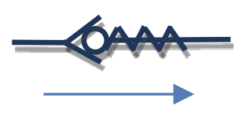 |
Válvula antirretorno | Permite la circulación de aire comprimido en un solo sentido. En el dibujo permite el paso del aire de izquierda a derecha. |
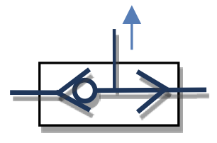 |
Válvula selectora o válvula “OR” | Permite la salida de aire cuando al menos una de las dos entradas tiene presión. No hay circulación de aire cuando en ninguna entrada hay presión. |
 |
Válvula de simultaneidad o válvula “AND” | Permite la salida de aire cuando las dos entradas disponen de presión. No hay circulación si no hay presión en alguna entrada o en ambas. |
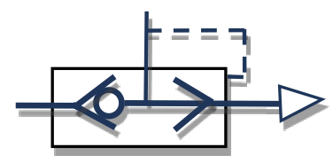 |
Válvula de escape rápido |
Las válvulas de escape rápido (o liberación rápida) son válvulas que abren automáticamente el camino de salida a la atmósfera cuando cae la presión del aire en el camino de salida. La tarea de estas válvulas es vaciar rápidamente las cámaras de los receptores neumáticos, por ejemplo, actuadores. Gracias a su uso, es posible aumentar significativamente la velocidad de movimiento del pistón actuador, especialmente de simple efecto. |
Válvulas de caudal
Son los componentes que regulan el caudal de aire que llega a los diferentes elementos del circuito. Los principales son:
| Símbolo | Válvula | Función |
|---|---|---|
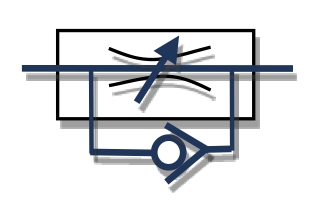 |
Válvula estranguladora unidireccional | Regula el caudal de aire en una sola dirección (mediante la apertura y cierre de un tornillo desde el valor 0 hasta el máximo). En el otro sentido el aire circula libremente. La válvula del dibujo permite el paso libre del aire de derecha a izquierda y lo estrangula en sentido contrario. |
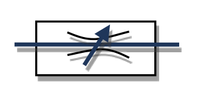 |
Válvula estranguladora bidireccional | Regula el caudal de aire en ambos sentidos. |
 |
Temporizador | Se utiliza para retardar la llegada de aire y el accionamiento del cilindro. Combinan una válvula estranguladora unidireccional y un depósito de aire cuyo tiempo de llenado establece el retardo. |
Aquí puedes ver un ejemplo de uso de un temporizador:

El aire pasa por el estrangulamiento y va llenando el depósito lentamente. Hasta que el depósito no se llena por completo, la presión que llega a la válvula no es suficiente para accionarla, por lo que hay un retardo. Regulando el estrangulamiento podemos variar el tiempo de llenado del depósito y, por tanto, el retardo de la válvula 3/2.